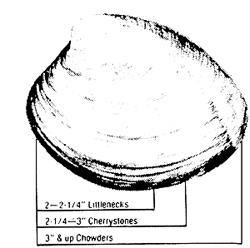
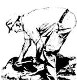
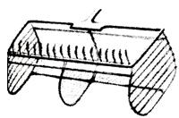
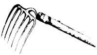
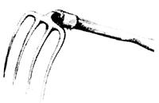
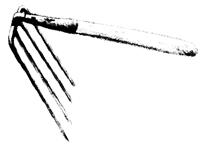
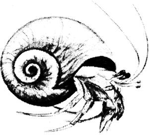
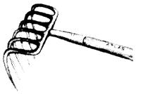

Phil Schwind is a Cape Codder who's been supplying both his family and local markets with freshly caught seafood for some 40 years . . . and he has now distilled all that valuable fishing-for-profit experience into a slim, yet near-exhaustive volume which can help you to get started in this outdoor enterprise too!
Making a Living Alongshore concentrates mainly on fish and shellfish found along the Atlantic coast . . . but Schwind's observations will help would-be market fishermen up and down the Pacific shore as well. And though the following excerpt focuses on clams, Schwind's interesting book also gives detailed infor. mation on surf fishing, flounder dragging, eel potting, quahogging, scalloping, and catching blue mussels.
"Whatever happened to the alongshore fisherman?" Schwind asks sadly, "the little fellow who provided his neighborhood with fish and shellfish that were fresh, fresh, FRESH . . . right out of the water with their tails still wagging or their shells clamped shut? The fish and shellfish remain there for the taking, but the fine art of making a living along the shore has gone the way of blacksmithing and candlemaking."
If you're lucky enough to live along a coast where the waters are still relatively unpolluted, Schwind's book may be just the tool you need to get started in a self-employment venture where freedom, sunrises, and salty breezes are as much a part of the payoff as the actual income you put in your wallet.
The often lonely way of the alongshore fisherman is not for everyone. But for the right person there is still a living to be made almost everywhere in the salt marshes and estuaries. It is a trade without glamour-a trade that takes a great deal of ingenuitybut it is a way of living ... one without parallel in freedom and personal satisfaction.
The tools of the trade are many and varied . . . and a number can be handcrafted. I will try to describe them in enough detail so you can make them yourself. I will also try to explain why they are made the way they are . . . so that an understanding of the tools may help you make ones that are better and more efficient.
The blind, dumb attitude, "That isn't the way my father taught me," or "That isn't the way the book says to do it," has always made me extremely frustrated. I've lost a couple of otherwise very special partners because I couldn't stand it. Probably my attitude of "Let's try something new," or "There must be a better way," was equally upsetting to them. You do have to start off with a little of, "This is the way it has always been done and there's a reason for it," but there is always a better way. While the search for that better way can be more expensive-sometimes almost catastrophic-the satisfaction and the profit of finding a superior method of doing anything can be worth all of the trials.
I learned the traditional ways of making a living alongshore from a dozen friends, but since most of them have gone on to better fishing grounds . . . I can only pass on to you some of the bits of knowledge they taught me-some techniques and "wrinkles"-and thus in a small way perhaps I can repay them.
Not all the know-how was acquired the easy way. Some of it was absorbed by a sort of osmosis: I soaked it in. My good wife had justification when I came home after a blowy day ashore, to greet me with, "Where have you been? You promised to put up the storm sash" . . . or whatever. But it was by listening to stories of the same fish being caught over and over that I learned little by little to try this or forget that . . . it was the listening that taught me, plus my continual dissatisfaction with the way things were done. So much of what is here was learned with "cut-and-try" . . . much was make-do. If I wasn't making enough to pay the grocery bill, I changed and changed ... and changed again until whatever gear I was using worked. . . or I gave up for a while and turned to something else to make a dollar.
There's one thing that bothers me about the present generation of fishermen: They act as though they are either lonesome or timid . . . as though whatever the crowd does is the best way. Nobody goes "looking" anymore. Nobody seems to want a better way or a hotter place. It's always the itchy character-the guy who wants to see what's on the other side of the next wavewho finds a new spot, invents new gear, and pulls the whole fleet in his wake.
I learned one other principle from the old-timers: "Get in when the band begins to play and get out before the coda! "
Let's take an example: We dug clams until Labor Day . . . after which the year's supply of clams was thinned down. Soon the market was even thinner. But littleneck clams were in demand and one tanner or another wanted big quahogs. That was only a stopgap, however, because-come the first of October-the scallop season opened. Then everybody and his dog and his grandmother's cousin got into the scallop business . . . and the price dropped proportionately. Next, the first of November opened the flounder dragging season. Since that took a certain amount of gear, not everyone could get into the business. We dragged them first in one salt pond and then in another . . . finding that if we went back in a couple of weeks we caught almost as many the second time around as we had the first.
And then-when winter came-we got frozen in, good and solid. So what did we do? We speared eels through the ice Tf WP had in January thaw, we either went back to scallop dragging or-if there were any left and the price was rightwe hit the flounders again. Spring saw the handliners wanting moonsnails for bait (sometimes we made more money than the handliners), and by May the striped bass were in the marsh. If striper fishing was thin when the moonsnail market eased off (for years we forgot clams because "there weren't none", though that's certainly not the case now), then we ourselves went handlining for flounders. But we were geared for stripers if they struck in again. We also ran conch pots some years and eel pots others.
As you can see, there was a continual change as the market moved up or down. We followed no man's compass course and fished in no one's wake. Yes, it took a lot of gear and a lot of know-how (that's the reason for this book). No one can tell you where, and when, and how to fish. But if you'll sit up and listen a little .. . if you'll realize there are other ways to make a living than just hanging on the end of a quahog pole-or going on welfare-you may not make more money . . . but you'll have a lot of fun. And you won't have to wear any man's tie or take off your hat to any other. We escaped the city during the "Great Depression", and you might just be headed that way. We found that if we couldn't always sell what we caught, at least we could eat it. It might be useful for you to keep that fact in mind.
"Meat fishing" has only one valid formula: money made minus money spent equals profit earned. No other consideration is pertinent. If the time involved matters to you, then you should get a nine-to-five job, pay your withholding tax, and go fishing for the fun of it.
You will have to know at what time you caught fish this morning in order to know when you should be at the beach tomorrow. But the fish don't know. No fish wears a wristwatch. The fisherman who goes out earliest, works hardest, and stays longest (and this holds true for any kind of fishing) will eventually catch the most fish and thereby make the most money . . . luck, skill, and the weather notwithstanding. If you and I and another fisherman go one day, and one of us comes in with the most fish, that's probably luck. But if one of us comes in consistently "high line"day after daythat's not luck. That's hard work and long hours. Furthermore, it's fine to share your fishing with your buddies-and that's the way it should be if you're fishing for fun-but if you're fishing for market, keep your mouth shut. If you have to brag, wait until next winter when the fish have gone.
If you're new at the game, you'll probably have to go where the gang goes . . . until you learn your own water and your own stretch of beach. Pay attention to whether or not you catch fish, where you catch them, how many you catch, what the weather conditions are, what lures or bait you use, what time of tide and day it is. Write it all down in your little black book until it becomes second nature for you to catalog it in your mind.
When searching for your own spots, remember that the news in the paper or on the radio is usually at least a day old. Even the gossip you pick up in the local tackle shop is about yesterday's fish . . . which may have moved before you can get there. However, you should study both the printed news and the local gossip for clues. If you go to the beach looking for likely spots, go at low tide. If possible, look down from a sand dune or other elevation with a pair of polarizing sunglasses.
If you're planning to sell your fish, keep them cool after you catch them. If you're in a skiff, lay them on their backs with their bellies up so they won't turn red. Cover them with a wet burlap bag if you have one. Bury them in wet sand if you're on the beach. (I guess I don't need to suggest that you mark the spot clearly so you won't lose it.) Wash your fish before you take them to market, though: Very few fish buyers like to buy sand.
Digging for soft-shell clams (steamers, long-neck clams, piss clams, Mya arenaria) by hand may not be the easiest way to make a living along the shore, but it is one of the easiest skills to learn-provided your back is strong enough-and one of the least expensive to undertake. After you have acquired your shellfish license, the only equipment you will need is a couple of clam hoes ("diggers, forks, or hacks", depending on where you live) and a means of transporting your clams ... whether in baskets or hods (or "drainers", to use the old phrase). Of course, you will need to work in an area affected neither by pollution nor by Gonyaulax tamaren sis (the "red tide") .
You will probably need a couple of clam hoes (or more), because not all the bottom in which you'll find clams is the same. One type of hoe works in firm sand, another in sticky mud, a third in wet, porous sand. For some reason-not excepting the socalled Ipswich digger-there is no good clam hoe available in any local hardware store. The teeth on "boughten" hoes are too short or too blunt. The angle where the tang fits the handle is either too flat or (as with the abovementioned Ipswich hoe) too steep. And the handle is far too long. Except for the fact that they cost too much, there isn't much else wrong with them.
If you are planning to dig in coarse, watery sand where the clams lie relatively deep (and while the biologists may say Mya is found two and a half times as deep as its own length, this is variable), you will need a fourtined hoe with a good "hook" in the teeth. These teeth should be wide (perhaps as much as 3/4 inch) and long (at least 10 inches and perhaps as much as 12 inches in extreme cases). The handle should certainly be no longer than 18 inches. I personally prefer 16.
While this hoe can be used in wet, soupy sand or mud, it would kill you in tightly packed sand or in mud with a large clay content. In damp but not watery sand, the clams probably won't be as deep. My favorite hoe for this kind of digging was made of an old, "ladies" spading fork, with teeth that were 3/8 of an inch wide and 10 inches long.
If you are digging in clayey mud, the clams probably will be even shallower, so a six-tined hoe with rounded tines eight inches long is a better tool. Since none of these tools is available locally, the local men have the blacksmith alter storebought versions. If there is no local blacksmith, most garages have a mechanic pretty well skilled with a torch or electric welding outfit.
Buy a spading fork (pitchfork) with tines that most nearly fit your needs. First have the blacksmith heat the tang of the fork and bend it so it is at slightly more than a right angle to the tines. Then saw off the handle to the length desired. Finally, grind down the tines at the points. Make them not narrow but flat . . . and be careful not to burn them and draw the temper. They don't have to be ground down to a knife edge . . . but remember that the thinner they are-up to an inch or so above the points-the more easily they will cut into the mud or sand.
A good clam hoe-shaped to fitis a tool no regular clammer allows anyone else to put his hand to carelessly. You don't have to buy a whole set of clam hoes, so to speak, at once. Buy the one most suited to your present needs, and then keep your eyes open for secondhand spading forks. The old ones seem to have better steel and better shapes.
Now about the actual digging of clams. I expect that half the commercial diggers on the cost will laugh at me, but I have dug my share of three-barrel days ... and I'm presuming you are new at the business and want to know what to look for.
Let's take optimum conditionsa bar of firm, not-toowet sandand go from there. The tide is dropping and the clam holes are showing . . . but you will notice that the holes are in clusters: a bunch here, a gap there, then a long stretch where they're reasonably close together.
Figure out in your mind's eye where you are going to dig. Don't start with the first thick clump of holes, but back a foot or two in clear bottom. Make your hole three or four forkfuls wide at first. Take the top off the sand the first time across, then go deeper the next time, and just before you get to that thick fringe of clam holes, dig down until you are sure you are deeper than the clams. Take out a couple of forkfuls of sand so that the hole is deep enough and wide enough for you to put a boot inside on each side of the hole. That way, you won't have to bend your back so far . . . and if you go down on your knees-as you'll probably want to do before the tide is overyou're going to slow yourself down.
Now, push down your digger teeth beyond the first lot of holes. Hook the forkful back, using slightly more pressure on the top of the teeth than on the bottom. (This is the reason for the hook in the hoe's teeth: to make it hang in.) If you do it right, the sand will topple over into the hole and the clams will be left bottoms up. However, if you don't go deep enough the first time, scratch out any clams you can. Clean out the area where you have dug, take off a half forkful of sand and toss it between your legs, and then go down a full forkful. You'll find that most of the clams you want, the ones that are two inches long or more, are nearly all at the same level.
Once you establish where that level is, you'll know just how deep to dig. The small ones you don't want will go out between your legs . . . and the really big ones will be still deeper. Unless the digging is sparse-or the market wants them-don't bother with the big ones. Each time you go ahead, clean your hole out slightly deeper than the bulk of the clams. Follow the inshore edge of the thickest clumps, "carrying" your ditch-so to speakwith you. If the tide is out, you may want to follow the edge of the bed all around (the clams will be bigger where there are fewer of them). Or you may want to double back alongside your first strip. All this time, your drainer should have been kept near your left hand and hitched slightly forward each time you moved ahead.
Of course, there are infinite variations on this procedure. If the sand is so porous that the water runs in where you are digging, you'll want a hoe with wider teeth and you will have to move faster. You can't wait too long, or the water will get ahead of you, and you'll be trying to wash out your clams. If you are in hard clay-mud, water may not be a problem, but it may take a lot more backbone to turn the clams you want upside down. In compact bottom, two-inch clams usually won't be deeper than the length of your clam hoe's teeth. If you get in sloppy mud, particularly when digging big clams, you may have to carry an extra bucket for bailing out the excess water.
Dyking clams is a technique for the experts. It is usually done in soft mud bottom where the clams are never uncovered at low tide. It's not the easiest digging in the world, but it can pay off when you learn it. Start inshore, but instead of throwing the mud out between your legs, throw it ahead of yourself . . . to build a dam or dyke around the clams you want to dig. Each time, throw the mud ahead until the dam is higher than the water surrounding it. As you dig to your dyke, push the mud ahead, building the wall farther and farther out into the tide. Once in a while, if the water gets ahead of you -or if your dyke leaks-you may have to bail yourself out with that extra bucket.
When you are finished, don't leave a lot of juvenile clams exposed. Take the time to fill in the last of your holes, covering whatever "short" clams will be exposed to too much sun or to the hungry mouths of minnow fry when they come in on the flood tide.
The modern trend seems to be to put clams in baskets as they are dug, but I still think the old way was better. When the weather was bad and we had nothing else to do, we used to build clam "hods" . . . a few more than we actually needed. In the days of threebarrel digging-when I started-that meant a lot of hods.
The inside dimensions of each hod were 9 by 9 by 19 inches, and each held two 12quart buckets of clams, or two-thirds of a bushel. We filled five hods for each three-bushel barrel, with the extra bucket for shrinkage. Today, even though so many clams are being sold by the pound, the hod is still a good container, because it can be set on the edge of the tide line, just underwater. The clams are washed, kept cool, and to a certain extent left to spew out the sand or mud that they inhale while they are being dug.
Standard hods (and there were a great many that did not conform to the standard, of course) had two square ends (usually made of scrap lumber). The hods themselves were made either of secondhand laths set a lath's thickness apart and cut 20-1/2 inches long (to allow for the 3/4inch-thick ends), or-in later years-they were covered with cellar window wire and battened at the corners with laths for reinforcement. The handle was usually a piece of 3/4inch rope secured on the outside just above the middle of each hod end. Or it might have been a thinner piece of rope threaded through a short length of old garden hose so the rope wouldn't cut through your hands if you had to struggle across a hundred yards of sticky mud with a hod full of clams in each hand. The clams can be rocked gently underwater in these hods . . . until they settle. And then, they can be rocked with a slight up-tossing motion from end to end until all the mud or sand has been washed out.
Half-bushel wire baskets are good if you can afford them. However, not only do they cost more . . . (and I don't wish to impugn anyone's honesty) but they also have a mysterious way of disappearing if they are left around the shore.
You have your gear and your clams. Now you need a market. Fishermen generally forget that the better condition their catch is in when it reaches the market, the surer they are to receive top price. If a fisherman consistently brings in clams that are clean of mud and sandif there is minimum breakage, if "short" clams are never brought in-then on the days when the market is slack, his clams will be the ones the fish buyer wants.
I hold no love for fish buyers (having fought with too many in my day) but you have to remember that they are in the business to make money, too. There is another angle from the fish buyer's point of view: He has to be able to depend on you. He has had to fight the fish market for a place to sell your clams, and-in all probability-he has had to promise to deliver a specified amount of clams at certain times. If you have a hangover, or if the tide or weather is "phew", or if you feel like a holiday, the fish market couldn't care less . . . and the fish buyer is caught in a bind. Guess whose clams he is going to buy the next time there are more clams available than there is a market for? It seems fundamental, but think about it.
Of course, if you're lucky enough to con the local fish market into buying your clams, thereby cutting out the fish buyer, the same rules pertain: clean clams, no broken or short clams, and the order filled . . . fair weather or foul. Keep your clams cool until they get to market. Don't carry them in buckets of water: It will heat up before the clams do, and they will use up all the oxygen in the water and drown. And do keep your clams out of the hot sun, covering them with a wet burlap bag if necessary .
Excerpted by permission from Making a Living Alongshore by Phil Schwind, copyright,1976 by International Marine Publishing Company. Available In herd cover for $7.95 from any good book store or for $7.95 plus 9511 shipping end handling from Mother's Bookshelf, P.O. Box 70, Hendersonville, North Carolina 28739.
|
 Chowder-clam and other quahog sizes |
 The author, busily dyking for clams |
 An eagle-claw rake for hard bottom. |
|
 A clam hoe for digging in hard mud. |
 This clam hoe to the author's favorite. |
 The Ipswich digger slides off gravel. |
|
 The hermit crab: good tautog bait. |
 A tool or hand scratching quahogs. |
|